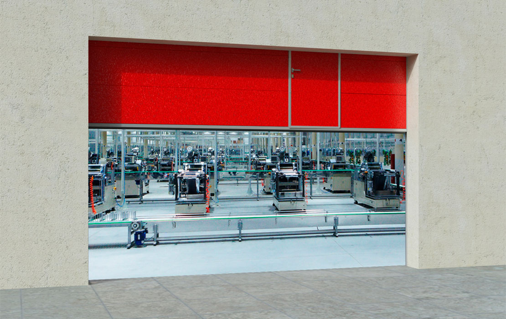

Дизайн
Типы поверхностей
{{ typePanel.title }}
Цвет панелей по RAL карте
{{ colorPanelRal.title }}
Противопожарные секционные ворота применяются в качестве защиты и удержания от распространения огня и дыма в смежные с источником возгорания помещения. Противопожарные ворота изготавливаются из специальных огнеустойчивых панелей с минераловатной прослойкой и имеют конструкцию классических секционных ворот. По периметру противопожарных секционных ворот устанавливаются резиновый уплотнитель и терморасширяющаяся лента, которая при нагревании увеличивается и герметизирует ворота. Благодаря тому, что ворота открываются вверх и откатываются под потолок, они не занимают много места внутри помещения, оставляя свободное пространство у проема. Большой выбор типов подъема ворот позволяет устанавливать их в помещения с различными размерами притолоки. Ворота спроектированы и изготовлены из высококачественных материалов с применением современных технологий. Они безопасны в использовании — в их конструкции предусмотрены защитные устройства от разрыва троса и обрыва пружины, обеспечивающие надежную работу и предотвращающие падение полотна ворот. Противопожарные секционные ворота DoorHan имеют более легкий вес по сравнению с аналогами, предлагаемыми на рынке. Они обладают высокой прочностью, термо и звукоизоляцией, а также защитой от взлома. Для автоматизации противопожарных секционных ворот применяются электроприводы DoorHan. Противопожарные ворота DoorHan полностью отвечают требованиям европейских строительных стандартов и имеют сертификаты соответствия.
Принцип работы: при открытии полотно движется вверх по направляющим и располагается под потолком, не занимая много места.
Преимущества: подходят для установки как во внешние, так и внутренние проемы зданий различного назначения; полотно ворот имеет более легкий вес по сравнению с аналогами.
Особенности конструкции: в конструкции предусмотрены защитные устройства от разрыва троса и обрыва пружины; большой выбор типов подъема.
Дизайн: на выбор предлагается два стандартных цвета (белый и коричневый); опционально ворота могут быть окрашены в любой цвет по карте RAL.

{{ acsessuar.title }}
{{ acsessuar.description }}
| Параметр | Показатель |
|---|---|
| {{ item.parametr }} | {{ item.index }} |
{{ i + 1 }}. {{ construction.name }}